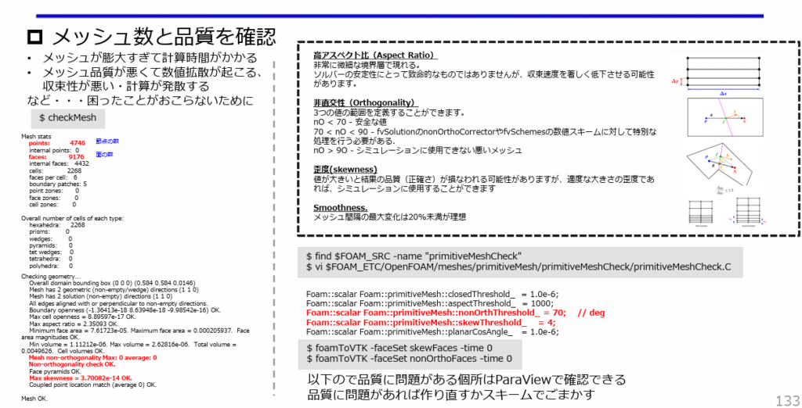

SALOMEで直方体モデルを作成し、OpenFOAMで使える境界名つきメッシュとしてUNV出力する。基本形状を題材に、メッシュ作成で頻繁に使う操作を一通り確認する。
この演習で使うファイル・計算結果は、リポジトリの以下のフォルダにある。
| フォルダ | 内容 |
|---|---|
data/001_box/run001_of13 |
SALOMEから出力した Mesh_4.unv と、OpenFOAM
13で流体解析を行うケース一式（0・constant・system、収束後の結果
90/）。./Allrun で一括実行できる |
data/001_box/run001_of2512 |
同じ解析をESI版OpenFOAM（v2512）の simpleFoam
で行うケース一式（./Allrun で一括実行、収束後の結果
80/） |
Geometry に変更し、Geometry画面へ切り替える。
Create a box をクリックする。100 x 60 x 10
として入力する。ここではmm単位で形状を作る。Apply and Close でBoxを作成する。

Operations > Blocks > Propagate
をクリックする。Box_1 を選択する。Apply and Close で確定する。
Compound_1, Compound_2,
Compound_3 が作成される。
Compound_1 を
x、Compound_2 を
y、Compound_3 を z にする。

Box_1 を選択した状態で
New Entity > Group > Create Group を開く。
Box_1
であることを確認する。inlet にする。Add で選択面をグループに追加する。Apply をクリックする。side → topAndbottom → outlet
の順に、inlet
と同様に面を選択して面グループを設定していく。

side として
Add → Apply する。
topAndbottom として
Add → Apply する。empty
にする。
outlet とする。Apply and Close
で閉じる。
Save as ... をクリックする。Save
をクリックし、SALOMEのプロジェクトファイルとして保存する。
x / y /
z）と面グループ（inlet / side /
topAndbottom /
outlet）が揃っていることを確認する。ここからは、作成したBox形状に対して、メッシュ作成でよく使う操作を一通り試していく。具体的には以下を行う。

Mesh に切り替える。
Box_1 を選択した状態で Create Mesh
をクリックする。
Box_1 が選択されていることを確認する。5 mm に設定する。Apply and Close で設定を保存する。
Mesh_1 を選択した状態で Compute
をクリックし、メッシュを作成する。Mesh computation succeed のMesh
Infosでセル数を把握する（ここではNodes 701、Tetrahedrons 1909）。
Mesh
から Create Mesh をクリックする。
Box_1 が選択されていることを確認する。15 にする。Apply and Close する。
Mesh_2 を選択した状態で Compute
をクリックし、メッシュを作成する。
Box_1 が選択されていることを確認する。1D タブを開く。Number of Segments をクリックし、分割数を
5 にする。
2D タブを開く。NETGEN 2D Parameters
をクリックし、Max. Size = 5, Min. Size = 1
を指定する。
3D タブを開く。NETGEN 3D Parameters
をクリックし、Max. Size = 2, Min. Size = 1
を指定する。
Mesh_3 を選択した状態で Compute
をクリックし、メッシュを作成する。
Clipping をクリックする。New > Relative を選択する。Y-Z 面で断面を作り、Apply
をクリックする。
Box_1 が選択されていることを確認する。15 にする。Apply and Close する。
Mesh_4 を選択した状態で Create Sub-mesh
をクリックする。
x を選択する。1D を選択する。Wire Discretisation を選択する。Number of Segments を選択する。40 にする。
Geometry に線グループ y
を選択し、y方向の分割数を指定する。
Geometry に線グループ z
を選択し、z方向の分割数を指定する。
Mesh_4 を選択した状態で Compute
をクリックし、メッシュを作成する。
File > Save As... をクリックする。Save をクリックする。
Box_1 が選択されていることを確認する。3D タブを開く。10 mm にする。Apply and Close する。
Mesh_5 を選択した状態で Create Sub-mesh
をクリックする。
inlet を選択する。2D を選択する。2 mm にする。Apply and Close で確定する。
Mesh_5 を選択した状態で Compute
をクリックし、メッシュを作成する。inlet 周辺だけメッシュサイズが 2 mm
になっていることを確認する。
Box_1 が選択されていることを確認する。3D タブを開く。5 mm にする。Viscous Layers をクリックする。
2 mm、レイヤー数を 3層
に設定する。inlet
面を選択して追加する例を示している。

File > Save As... をクリックする。Save をクリックする。SALOMEで作成したメッシュをOpenFOAMへ渡すには、UNV形式で書き出し、OpenFOAMのケースフォルダへ変換・配置する必要がある。全体の流れは以下の通り。

この章ではこの操作は不要です。 メッシュを切ったあとにGeometryモジュールへ戻って面に名前を付けた場合、Geometryとメッシュに境界名が関連付けられていない。メッシュに境界名が反映されていない場合は、この操作を行うこと。

Mesh_4 を選択した状態で
Create Groups from Geometry をクリックする。inlet、side、topAndbottom、outlet
を追加する。Apply and Close で確定する。
Groups of Faces
がOpenFOAMの境界面の名前になる。ideasUnvToFoamでエラーになることがある。Groups of Edges の線グループは不要なので、右クリック
> Delete で削除しておく。
Mesh_4
上で右クリックし、Export > UNV file を選ぶ。Mesh_4 として保存する。OpenFOAMでは、メッシュだけでは計算できない。計算には、初期条件を入れる
0、物性やメッシュを入れる
constant、計算条件を入れる system
が必要になる。
今回は定常・非圧縮流れの計算を行うため、OpenFOAM 13のチュートリアル
incompressibleFluid/pitzDailySteady をベースにする。
cd data/001_box/run001_of13
cp -r /opt/openfoam13/tutorials/incompressibleFluid/pitzDailySteady/{0,constant,system} .
rm -f system/blockMeshDictpitzDailySteady
は、非圧縮流体の定常解析用チュートリアルである。system/controlDict
では、solver incompressibleFluid
を使う設定になっている。system/fvSchemes では、時間微分を
steadyState として扱う。system/fvSolution
では、定常解析で使うSIMPLE法の設定が入っている。system/blockMeshDict
はチュートリアル付属のメッシュ作成用ファイルである。今回はSALOMEで作成したUNVメッシュを使うため削除する。UNVを書き出した後は、OpenFOAM側で以下の計算フォルダへ移動して作業する。
cd data/001_box/run001_of13data/001_box/run001_of13 とする。Mesh_4.unv は
data/001_box/run001_of13/Mesh_4.unv に保存する。0、constant、system
も、この計算フォルダ内に置く。計算フォルダに入った後、OpenFOAM 13を読み込み、SALOMEから出力したUNVメッシュをOpenFOAM形式へ変換する。
. /opt/openfoam13/etc/bashrc
ideasUnvToFoam Mesh_4.unv > log.ideasUnvToFoam.of13 2>&1
transformPoints "scale=(0.001 0.001 0.001)" > log.transformPoints.of13 2>&1
checkMesh > log.checkMesh.of13 2>&1. /opt/openfoam13/etc/bashrc は、OpenFOAM
13のコマンドを使えるようにする。ideasUnvToFoam Mesh_4.unv
は、SALOMEから出力したUNVメッシュをOpenFOAMの
constant/polyMesh 形式へ変換する。> log.ideasUnvToFoam.of13 2>&1
は、変換時の標準出力とエラー出力をログファイルへ保存する。transformPoints "scale=(0.001 0.001 0.001)"
は、座標をx, y, zすべて 1/1000
倍する。SALOMEでmm単位の形状を作った場合、OpenFOAMで使うm単位へ変換するために使う。transformPoints -scale "(0.001 0.001 0.001)"
と書く。checkMesh
は、変換後のメッシュ品質、境界面、セル数、寸法などを確認する。log.checkMesh.of13 を確認し、Mesh OK
が出ていれば、基本的なメッシュチェックは通っている。チュートリアルからコピーした 0 フォルダの各ファイルと
constant/polyMesh/boundary
を、SALOMEで付けた境界名（inlet・outlet・side・topAndbottom）に合わせて編集する。
| 境界名 | constant/polyMesh/boundary の type |
0/U |
0/p |
|---|---|---|---|
inlet |
patch |
fixedValue、value uniform (0.01 0 0) |
zeroGradient |
outlet |
patch |
zeroGradient |
fixedValue、value uniform 0 |
side |
wall |
noSlip |
zeroGradient |
topAndbottom |
empty |
empty |
empty |
inlet ではx方向へ0.01 m/sの一様流入を与える。outlet の圧力を uniform 0
とし、基準圧にする。ideasUnvToFoam
変換直後は、constant/polyMesh/boundary の各境界が
patch になっている場合がある。side を
wall、topAndbottom を empty
に修正する。topAndbottom
を2次元計算の空方向として扱うには、constant/polyMesh/boundary、0/U、0/p
の3か所をすべて empty に揃える。境界条件を設定したら、ソルバを実行する。
foamRun > log.foamRun.of13 2>&1foamRun が
system/controlDict の
solver incompressibleFluid;
を読み込み、非圧縮流体の定常計算（SIMPLE法）を行う。controlDict
に書かれた設定を使わず、実行時にソルバ名を明示する場合は、foamRun -solver incompressibleFluid > log.incompressibleFluid.of13 2>&1
とする。simpleFoam > log.simpleFoam 2>&1
のようにソルバ名をコマンドとして直接実行する形式もあるが、これは独立したソルバ実行ファイルを提供するOpenFOAMのバージョンやディストリビューションで使用する。OpenFOAM
13の incompressibleFluid
はソルバモジュールなので、この演習では foamRun
を使用する。system/controlDict の endTime は
2000
としているが、定常解析では残差が収束判定を満たした時点で計算が終了する。今回の計算は90反復で収束し（log.foamRun.of13
に SIMPLE solution converged in 90 iterations
と出力される）、結果は 90/ フォルダに書き出された。log.foamRun.of13 の各反復で
Ux・Uy・p
の残差（Initial residual）が小さくなっていく様子を確認する。OpenFOAMで計算した後は、post.foam
を作成してParaViewで結果を確認する。
touch post.foam
inlet は U = (0.01 0 0) m/s
とし、x方向へ 0.01 m/s の一様流入を与える。U Magnitude
を表示している。これは速度ベクトル U
の大きさであり、入口付近ではおおよそ 0.01 m/s になる。outlet は自然流出として扱う。速度
U は zeroGradient、圧力 p
は基準圧として fixedValue 0 を与える。topAndbottom は empty
とし、2次元解析として厚み方向を解かない。side は wall
とし、壁面では流速が0になるため、壁近傍で U Magnitude
が小さくなる。
checkMesh
の結果では、セル数だけでなく次の品質指標を確認する。
Max aspect ratio:
セルの縦横比。大きすぎるセルは計算の収束を遅くする場合がある。Mesh non-orthogonality Max:
セル面とセル中心間の非直交性。70度を超える場合は数値設定による補正が必要になり、90度を超えるメッシュは使用しない。Max skewness:
セルの歪み。値が大きい場所では補間精度が低下しやすい。Mesh OK:
OpenFOAMの基本的な品質判定を通過したことを示す。ただし、解析内容に適した品質かどうかは各指標の値とParaView上の位置を併せて判断する。品質に問題がある面やセルは、checkMesh
の面セット・セルセット出力をParaViewで表示し、問題箇所を確認する。